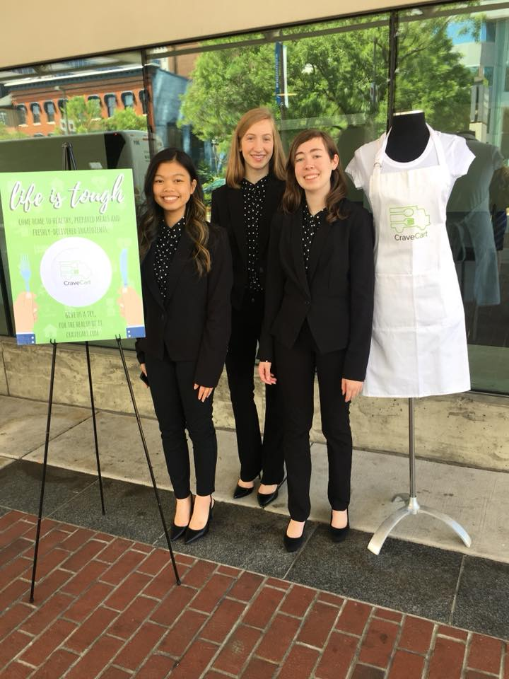

I am one in a family of 7. There are twins and triplets--I am a fraternal twin. Music was very emphasized in our home, leading to my participation in Literary competitions at the state level.
I graduated from high school last May as Salutatorian. Succeeding in career has been one of my top goals.
I have always had an entrepreneurial spirit, from lemonade stands, to formulating a real product with other business partners.
